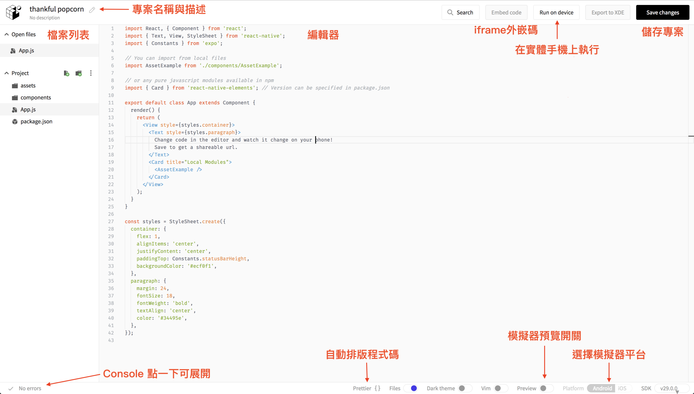
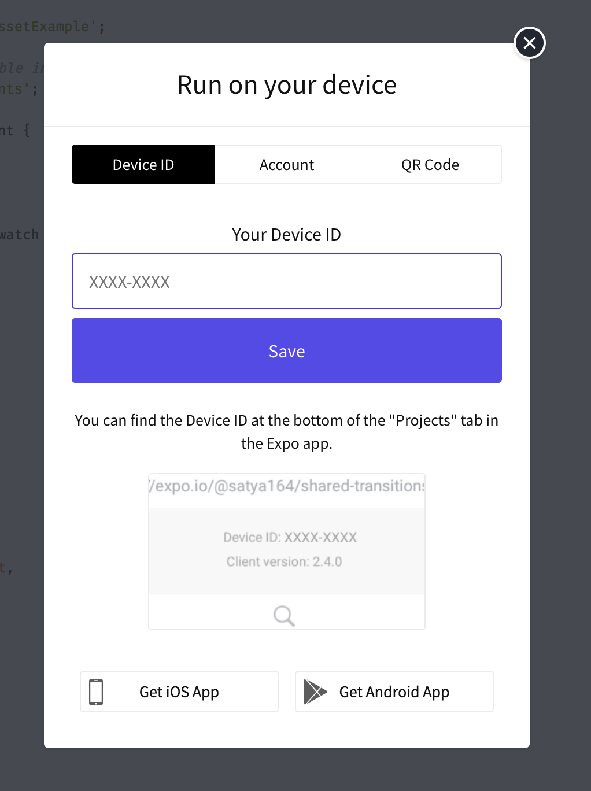
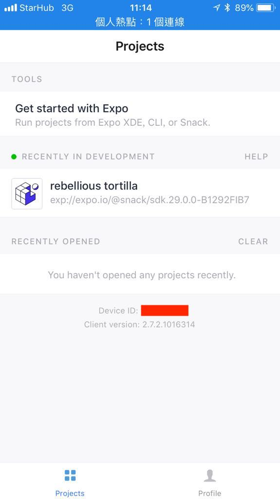
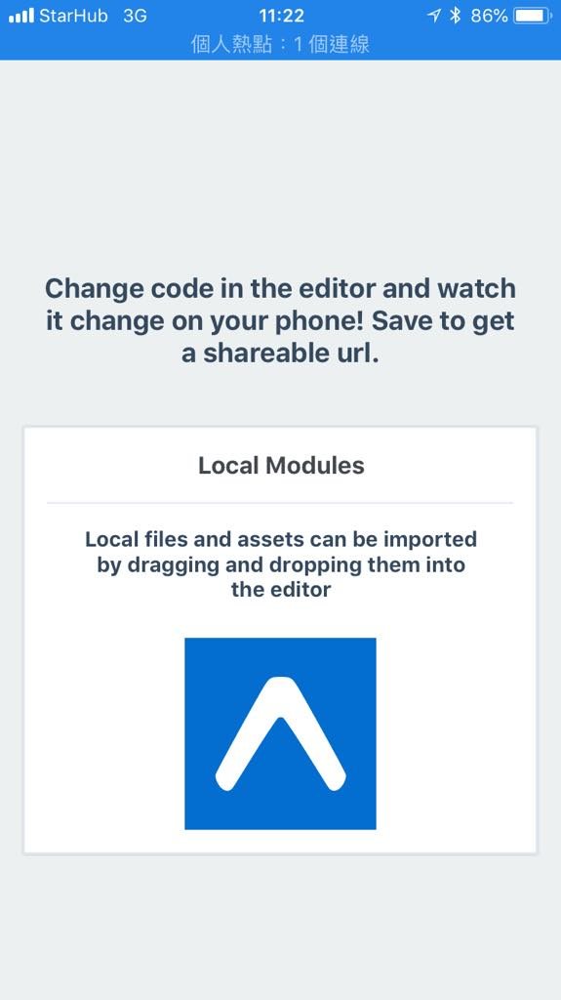

Expo Snack
Expo Snack 是一個線上的 React Native playground，使用 Expo 的 SDK 執行 可以在線上建立一個簡單專案，並讓程式碼在網頁上的手機模擬器或是自己的手機上運行，並且包含 debug console 功能。
Expo Snack 並沒有辦法在線上打包 App，也不能隨意安裝其他套件，若想要有更多控制權，則需要輸出下載成 Expo 專案，然而 Expo 的專案仍然缺少對原生專案的控制權，如果想要轉換回原本的 React Native 專案需要做 eject 處理。由於 Expo 專案情況會比較複雜，這邊我們就先暫時使用方便的 Expo Snack 線上環境來快速體驗 React Native，之後則會使用經典的 React Native 環境來創建專案。
Expo v34.0 支援 web 預覽功能，可以將執行結果直接用 web 展示
網址
Expo Snack : https://snack.expo.io/
可以先註冊帳號
註冊帳號後可以儲存專案到服務帳號中進行管理
需要在手機上安裝 Expo App
- iOS: https://goo.gl/Hh5jLm
- Android: https://goo.gl/0Xfx08
功能介紹

Run On Device

用手機打開 Expo App 可以看到手機的 device id

填入之後下拉更新專案列表，可以看到線上的專案，點選後就會在手機上執行專案顯示畫面
